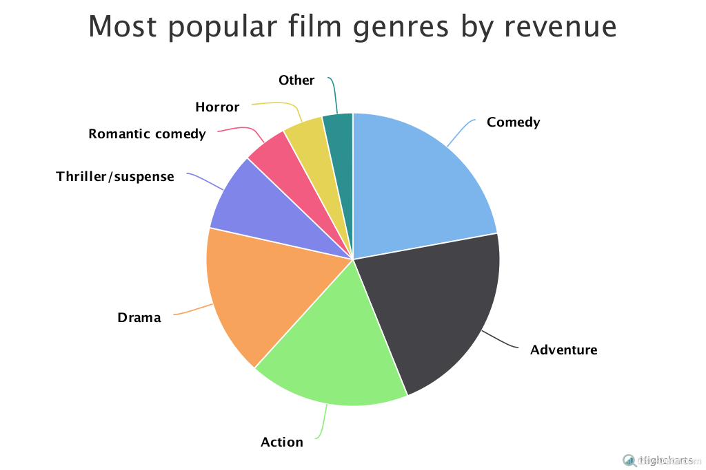
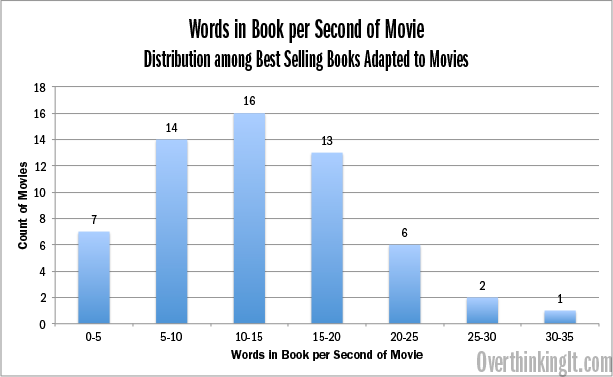

TicketsMovie.com
What is TicketMovie.com?
We are a worldwide leader in advance movie ticketing, offering moviegoers a quick and easy way to purchase tickets since 2000.
We have a passion for movies and technology and are dedicated to fulfilling the needs of moviegoers worldwide.
Our movie ticketing knowhow allows us to create an experience you’ll value as much as movies themselves.
Film and Movie Industry - Statistics & Facts
The global film industry shows healthy projections for the coming years, as the global box office revenue is forecast to increase from about 38 billion U.S. dollars in 2016 to nearly 50 billion U.S. dollars in 2020. The U.S. is the third largest film market in the world in terms of tickets sold per year, only behind China and India. Just under 1.2 billion movie tickets were sold in the U.S. in 2016. There are about 5,800 cinema sites in the U.S. as of 2016. According to a recent survey, 14 percent of Americans go to the movies about once a month, six percent go see movies in the movie theater twice or three times a month, whereas 31 percent go a few times a year. This is a considerable share taking into account the 52 percent of American adults prefer watching movies at home.
Film entertainment is big business in the United States. It is expected that the film entertainment business will generate 35.3 billion U.S. dollars in revenue by 2019. Among film studios, Buena Vista achieved the most in 2016 – it held the largest market share, approximately 26 percent, and generated the highest box office revenue, over three billion U.S. dollars. Warner Bros. accounted for nearly 17 percent of the total box office gross in North America, and 20th Century Fox held about 13 percent of the market share. Warner Bros, Universal and Miramax have all been awarded with the prize of “Best Picture” in the Academy Awards four times each.
In 2016, 733 movies were released in North America, with drama being the most common genre amongst movie releases in the region. Until now, the most successful movie franchise in the region was the Marvel Cinematic Universe, which generated over four billion U.S. dollars of box office revenue in North America alone. Movies like “Iron Man”, “Marvel’s The Avengers”, “Spider-Man”, “The Incredible Hulk” are a few examples of franchise films. “Star Wars: The Force Awakens” is the highest grossing 3D movie in North America, with lifetime gross of around 936 million U.S. dollars.
Statistics & Facts

Booking Statistics

Online Booking vs Offline Booking
When was the last time you were part of the long queue outside the ticket counter of a cinema hall, waiting for your turn to book advanced tickets and the adrenaline rush you felt when the “OPEN” signboard flipped to “HOUSEFULL” the moment you reached the counter?
Well, gone are the days when one could see a long line of crazy-cine lovers queuing outside the ticket counters of cinema halls with the queue stretching right across the road. With the whole game of booking movie tickets going online, current statistics show that almost 50% of the movie tickets today are booked online.
If you come to notice it, there is only a particular profile of people who still prefer to buy window tickets rather than book them online. This would particularly include senior citizens, uncles having least belief on today’s technologies and housewives wanting to get out of house for some time!! So, basically it’s the family crowd you can witness at the counters, it would be a rare sight to see the younger crowd at these ticket counters.
In short there has been a significant transition from offline movie ticket bookings to online bookings. The long queues are still there… not for advanced bookings but instead for ID verification of those coming to collect their tickets after booking them online.
Contact Us On :